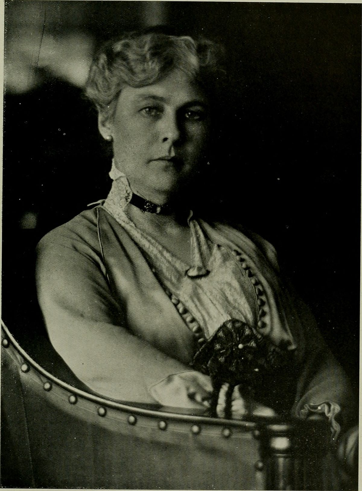

KATHERINE ROUTLEDGE
When Katherine Routledge approached the British Museum and Royal Geographic Society in the 1910s about a voyage to Easter Island, she brought along her husband, William Scoresby Routledge. William had been elected to the Royal Geographic Society in the 1880s, so he had already built a rapport with the other men of the society.
Katherine didn’t have any formal training beyond her degree in modern history at Oxford, but had become interested in uncovering the mysteries of the origin of the moai, or big stone statues, on Easter Island. With notes from an Oxford scholar and William by her side, she successfully pitched her expedition to the island, where her research involved excavation of the statues and conversations with the last remaining indigenous elders on the island. Dozens of statues were ultimately excavated, and her research was published after she and her husband returned from the expedition.
GUDRIDUR
Known from Icelandic tales like the Greenland Saga, Gudridur was an explorer who lived in Greenland in the 900s. Taken there by her father from their native Iceland, she married the son of Erik the Red, who founded Greenland, and she and her husband joined an expedition heading west from Greenland to explore North America. After her husband died on the return trip, she continued to explore, got remarried, and spent two years colonizing North America with her new husband.
JEANNE BARET
Also known as Jean Baret, she was the housekeeper of French naturalist Philibert Commerson, and dressed as a man in order to accompany him on his round-the-world sailing trip in 1766. Women weren’t allowed on naval vessels at the time, so disguising herself as a man was necessary in order to join the expedition. The crew eventually figured out that she was a woman, but they were impressed with her determination and decided she could stay aboard until the ship made it home. When Commerson fell ill on the journey, Baret took care of him until he died, then continued on the voyage. She married a French soldier and eventually returned home to France after being away for about a decade.
RUTH HARKNESS
A New York fashion designer and socialite in the 1920s and ‘30s, Ruth Harkness found her way into the world of exploration and conservation through her husband’s desire to bring a panda back to the United States. He died before he could see that dream realized, so Harkness took over, traveling to Shanghai and launching her own panda expedition. Twelve professional expeditions before her had failed, but in 1936 she successfully brought a panda cub to the U.S.—the first one to live outside of China—and started a new era of panda conservation.

DELIA AKELEY
Delia Akeley’s second husband, Carl Akeley, introduced her to exploration. His work as a taxidermist was purchased by the American Museum of Natural History and the Chicago Field Museum, and the couple took several trips to Africa to collect specimens, even though this meant shooting and killing them. Delia shot almost as many specimens as Carl did, including a bull elephant. At one point, having killed many animals in the name of preservation and conservation, Carl stated that he felt like a murderer. Though they eventually divorced, Delia continued to travel to Africa, leading two more expeditions to the continent before she married her third husband and retired from her career as an explorer.
AMELIA EARHART
While the famous pilot’s adventures across the globe didn’t spring from a partnership with a husband, Amelia Earhart did work with her husband to help manage her career as an explorer. Earhart resisted marrying George Putnam, an explorer in his own right, who proposed to her six times before she relented and said yes. She made him promise that they would leave each other in a year if they were not happy, and removed the standard language of a bride promising to “obey her husband” from their civil ceremony.
Their marriage lasted and Putnam managed Earhart’s public appearances until her disappearance in 1937. His initially optimistic reports to the press became fewer and far between as time passed and no one recovered her plane or her body. Earhart still has not been found, and her husband went on to start a new publishing company and fight in World War II after her death.